Editorial photo series examining how gender expectations evolve while continuing to shape female identities. Drawing on different historical aesthetics, the project uses stylised imagery to critique the ways femininity is packaged and performed across generations.
“The packaging may change — glamorous housewife, effortless career woman — but the demand for palatability remains.”
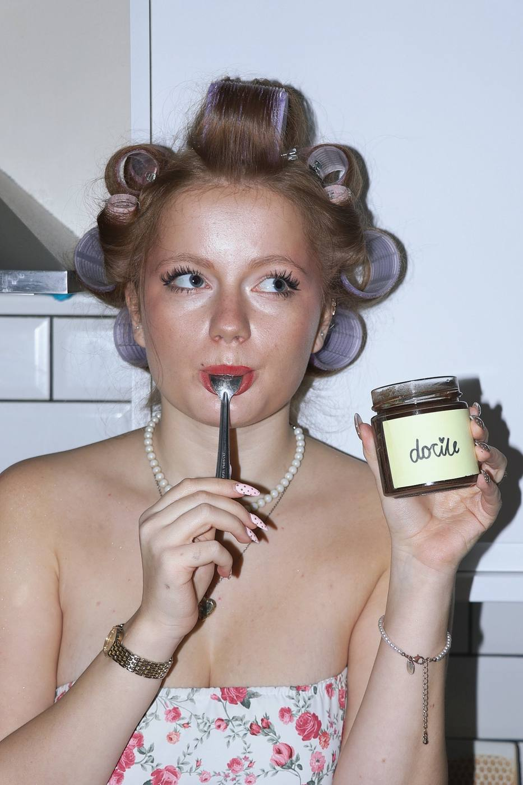
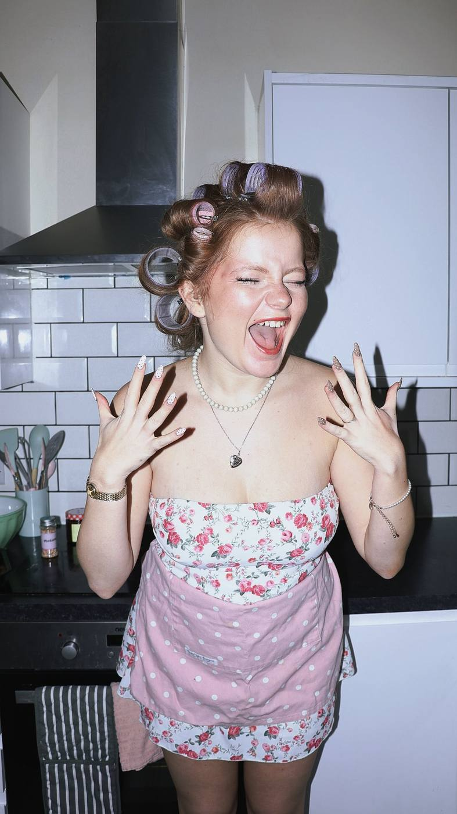
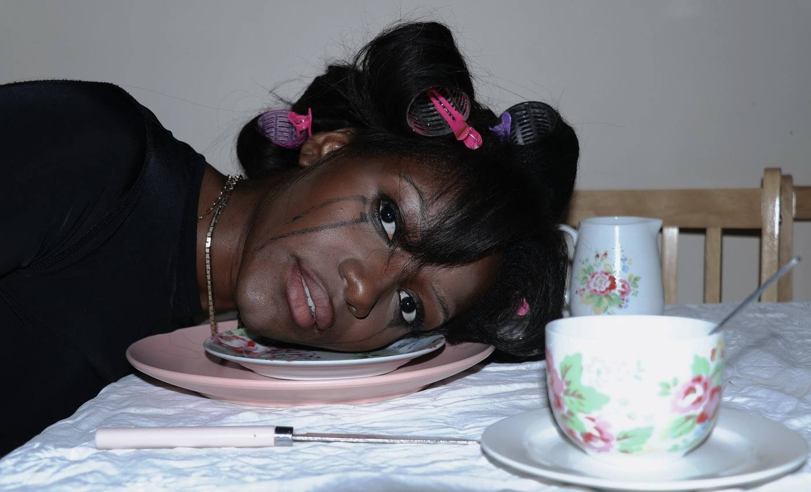
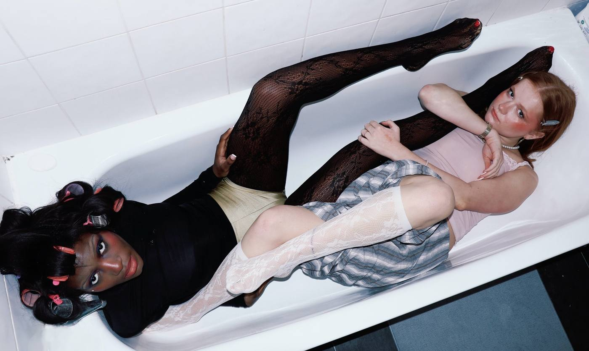
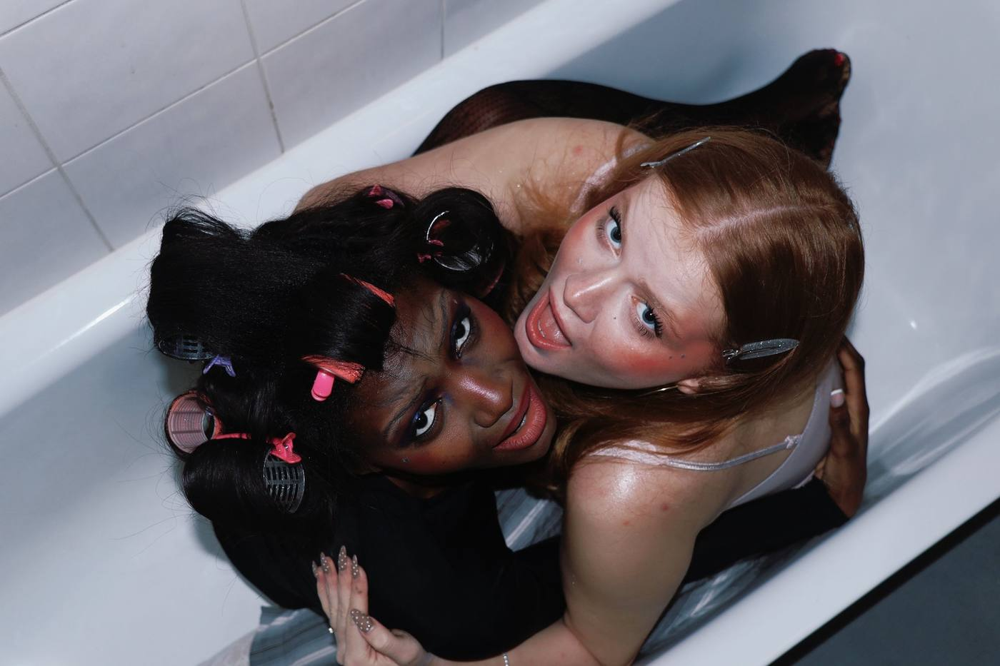
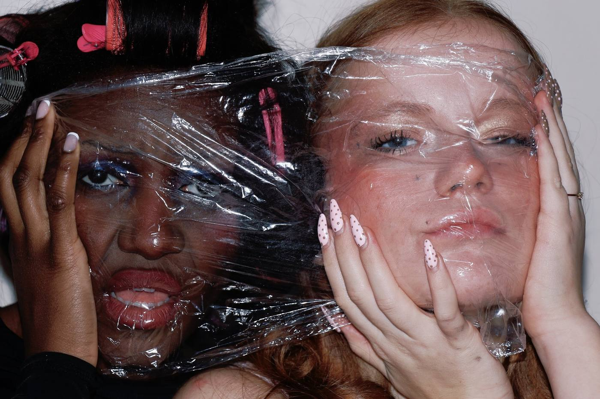
Editorial shoot exploring how female-led subcultures — Mod, Riot Grrrl, and Indie Sleaze — have historically functioned as forms of rebellion and self-expression. By placing these eras within contemporary London spaces, the project examines how digital culture and algorithmic aesthetics transform subcultural resistance into curated trends.
“What once signalled resistance is now recycled as moodboards and feedable trends.”
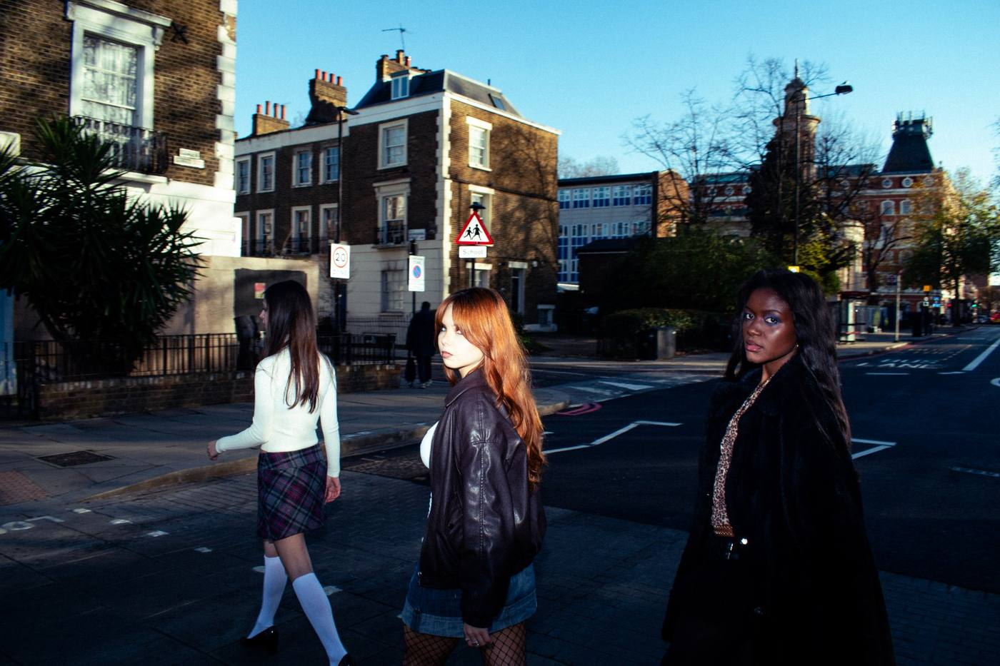
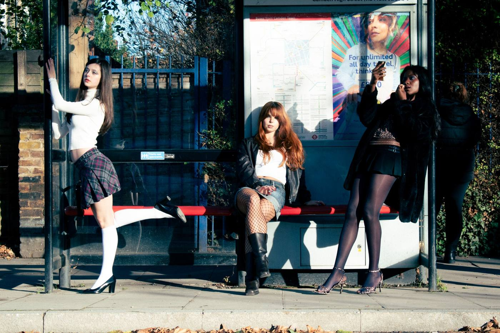
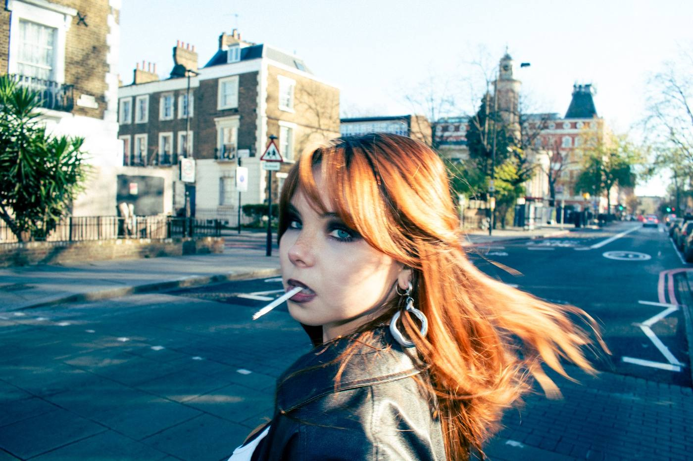
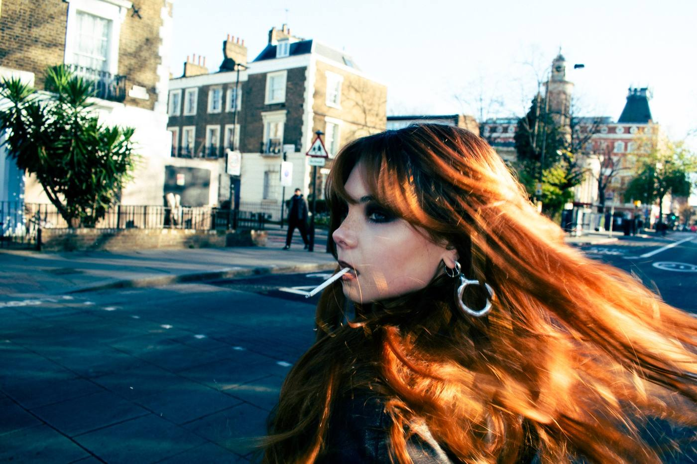
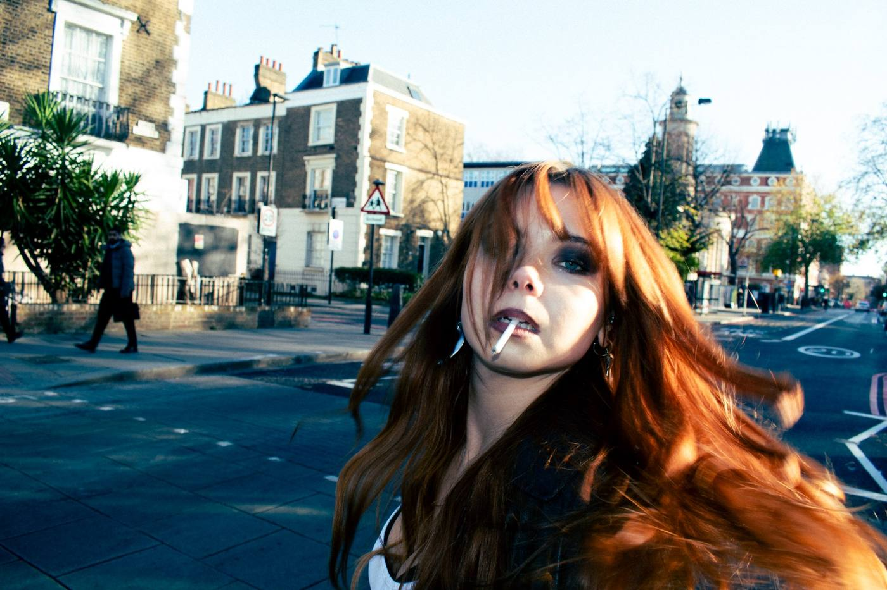
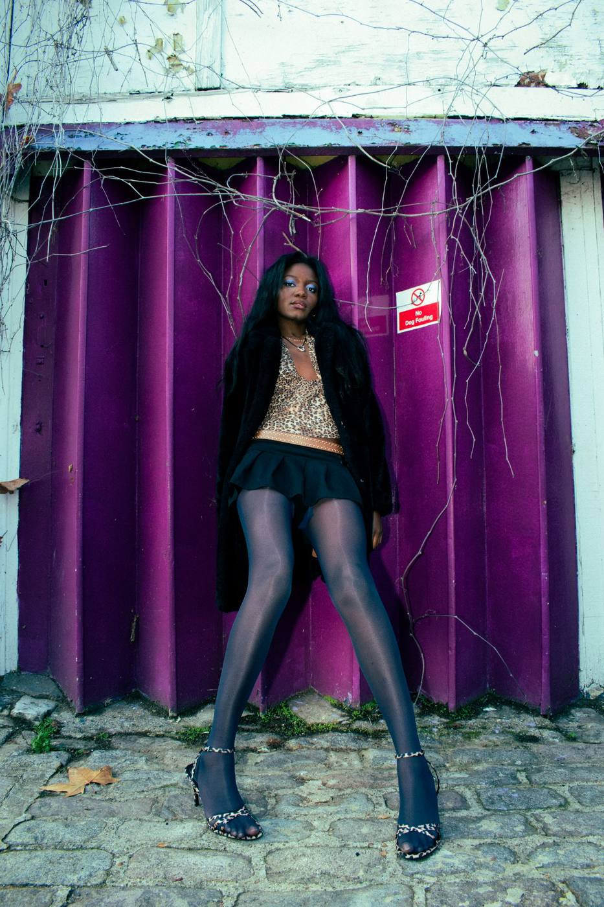
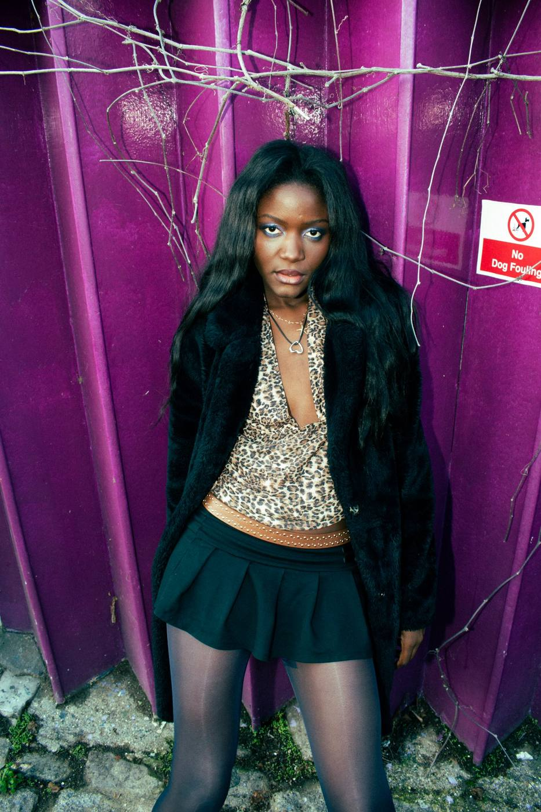
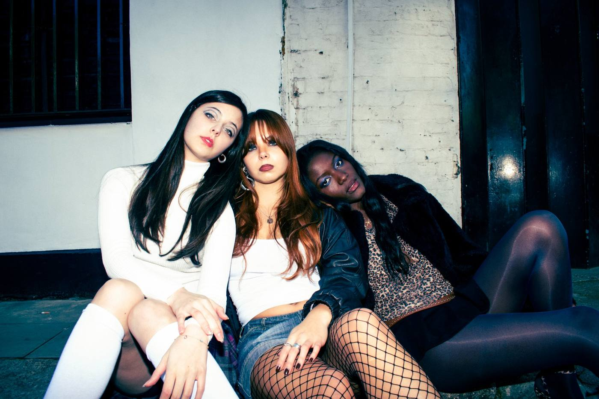